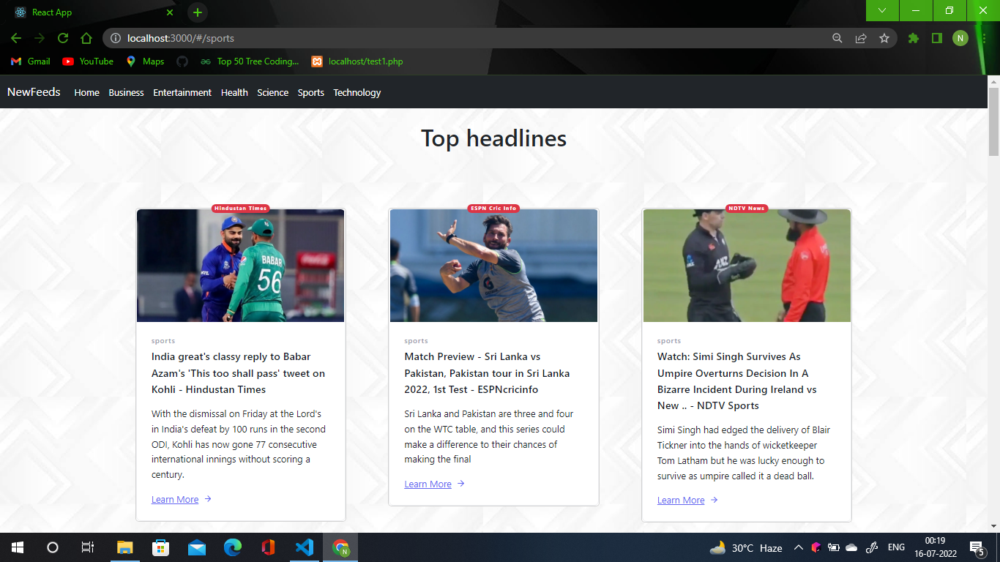

Overview on News-web
News websites are sites devoted to delivering the news in a different format than television, print or radio. News sites include sites that have a large variety of information which may not be considered "news" by all audiences, but may include entertainment, games, news that may not be current but is interesting.